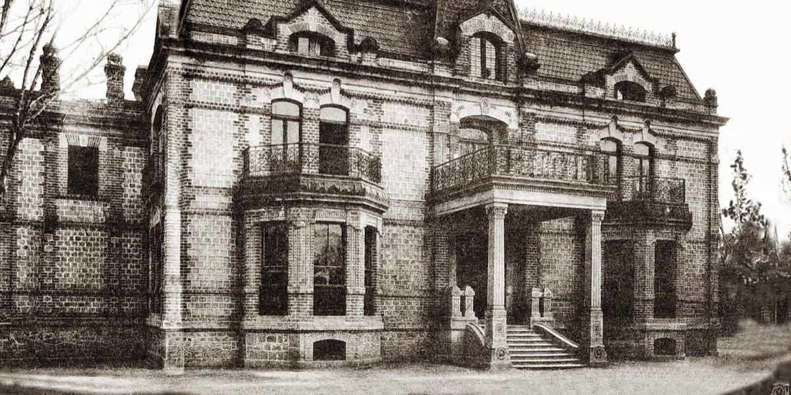
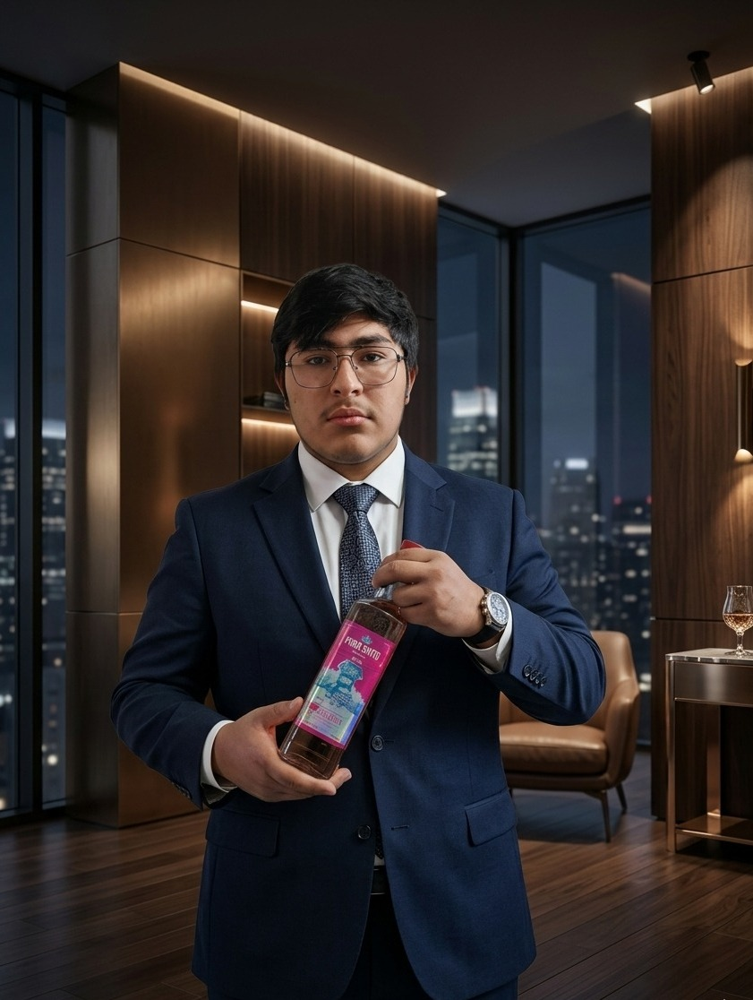

Seis generaciones de maestros tequileros han custodiado el secreto del pozo sagrado, donde el agua y la tierra se unen para crear el espíritu más puro del agave.
Six generations of master distillers have guarded the secret of the sacred well, where water and earth unite to create the purest spirit of the agave.
Corría el año 1888 cuando Don José María Heredero, un jinete errante, se adentró en las tierras áridas de Jalisco persiguiendo un sueño. Tras días de cabalgata bajo el sol implacable, el hombre y su caballo estaban al borde de la desesperación, sedientos y perdidos.
It was the year 1888 when Don José María Heredero, a wandering rider, ventured into the arid lands of Jalisco chasing a dream. After days of riding under the relentless sun, the man and his horse were on the brink of despair, thirsty and lost.
Cuando todo parecía perdido, el caballo se detuvo y comenzó a escarbar la tierra con furia. Don José María, confundido, observó cómo de entre las grietas comenzó a brotar un pequeño manantial de agua cristalina. Al beber de sus aguas, sintió un vigor renovado y una claridad mental como nunca antes había experimentado.
When all seemed lost, the horse stopped and began to dig the earth with fury. Don José María, confused, watched as a small spring of crystalline water began to flow from the cracks. Upon drinking from its waters, he felt renewed vigor and mental clarity like never before.
"Esta agua tiene un sabor distinto, como si la tierra misma hubiera destilado el espíritu de los dioses. Este lugar es sagrado."
"This water has a distinct taste, as if the earth itself had distilled the spirit of the gods. This place is sacred."
Convencido de haber encontrado un lugar bendecido, Don José María decidió establecer ahí su hogar. Construyó una pequeña choza junto al pozo y plantó los primeros agaves, sin saber que estaba dando inicio a un legado que perduraría por más de un siglo.
Convinced he had found a blessed place, Don José María decided to establish his home there. He built a small hut next to the well and planted the first agaves, unaware that he was beginning a legacy that would last for over a century.

Don José María Heredero descubre el pozo sagrado y planta los primeros 100 agaves. Nace la leyenda de Pozo Santo.
Don José María Heredero discovers the sacred well and plants the first 100 agaves. The legend of Pozo Santo is born.
La familia construye su primer alambique de cobre y produce el primer lote de tequila, utilizando el agua del pozo sagrado.
The family builds their first copper still and produces the first batch of tequila, using water from the sacred well.
Se embotella el primer tequila con la marca "Pozo Santo" y se comienza a vender en las cantinas de Guadalajara.
The first tequila is bottled under the "Pozo Santo" brand and begins to be sold in the cantinas of Guadalajara.
Pozo Santo gana su primer reconocimiento internacional en la Feria de Sevilla, España.
Pozo Santo wins its first international recognition at the Seville Fair in Spain.
Se celebra el centenario de la fundación con la publicación del libro "La Leyenda del Pozo Santo".
The centennial of the foundation is celebrated with the publication of the book "The Legend of the Holy Well."
La sexta generación de la familia Heredero lleva el espíritu de Pozo Santo a más de 25 países alrededor del mundo.
The sixth generation of the Heredero family carries the spirit of Pozo Santo to more than 25 countries around the world.
Fundador (1888-1920)
Founder (1888-1920)
El visionario que descubrió el pozo sagrado y plantó la semilla de un legado eterno.
The visionary who discovered the sacred well and planted the seed of an eternal legacy.

2da Generación (1920-1950)
2nd Generation (1920-1950)
Construyó la primera destilería y profesionalizó la producción del tequila.
Built the first distillery and professionalized tequila production.
3ra Generación (1950-1975)
3rd Generation (1950-1975)
Internacionalizó la marca y obtuvo los primeros reconocimientos mundiales.
Internationalized the brand and obtained the first worldwide recognitions.